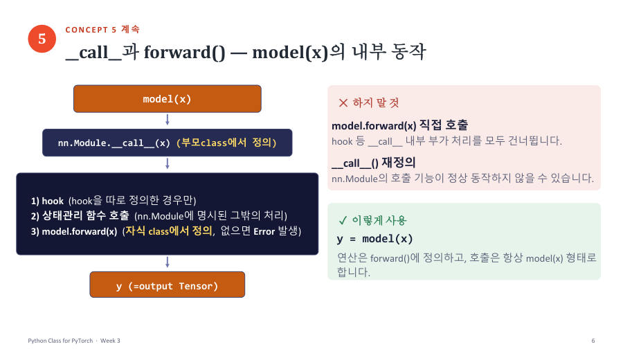

model(x)는 어떻게 forward를 실행할까 — __call__ ★★★
코드를 보면 forward를 만들었는데 실제로는 model.forward(x)가 아니라 model(x)라고 불러요. 이상하죠. 교수님이 여러 번 강조한 부분이라서 순서대로 따라가 볼게요.
손님(x)이 바로 주방(forward)으로 들어가지 않고 접수대(__call__)를 먼저 거쳐요. 접수대는 번호표를 주고 기록을 남기는 등 부가 업무를 한 다음 주방에 주문을 넘겨요. 접수대는 식당 본사(부모 nn.Module)가 이미 만들어 뒀고, 주방(forward)만 우리 가게(자식 클래스)가 직접 꾸려요.
먼저 앞 장에서 배운 __call__을 복습할게요. 클래스에 __call__을 만들어 두면 그 인스턴스를 함수처럼 f(3)로 부를 수 있어요. 교수님은 __call__ 안에서 forward를 부르는 예를 보여 줬어요.
| 코드 줄 | 무슨 뜻 |
|---|---|
m1 = AffineFunction(a=2, b=1) | a=2, b=1인 객체를 만들어요. 이때 __init__이 한 번 실행돼요. |
m1(3) | 괄호로 부르면 파이썬이 m1.__call__(3)을 실행해요. |
return self.forward(x) | __call__이 다시 forward를 불러요. 그래서 "forward() 호출됨"이 찍혀요. |
2 * 3 + 1 | forward의 계산이에요. 결과 7. m1(10)은 2×10+1 = 21이에요. |
nn.Module이 하는 일이 바로 이거예요. 우리가 만든 MyModel에는 __call__이 없어요. 그래서 파이썬은 부모 nn.Module에서 물려받은 __call__을 찾아 실행하고, 그 안에서 우리가 만든 forward가 실행돼요.
y = model(x)를 써요.- 부모
nn.Module의__call__(x)가 실행돼요. - 그 안에서 ① hook(따로 만든 경우에만) ② 그밖의 상태 관리 처리 ③
forward(x)실행이 차례로 일어나요. - 결과 y(출력 Tensor)가 나와요.

| 방법 | 판정 | 이유 |
|---|---|---|
y = model(x) | 정답 | __call__의 부가 처리를 모두 거쳐요. |
y = model.forward(x) | 하지 말 것 | 계산은 되지만 hook 같은 부가 처리를 건너뛰어요. |
__call__을 내가 다시 정의 | 하지 말 것 | 부모가 하던 중요한 처리를 못 해서 호출 기능이 제대로 안 될 수 있어요. |
한 가지 더. 모델을 만들 때(model = MyModel()) __init__이 한 번 실행되고, model(x)를 부를 때마다 forward가 실행돼요. model(x)가 __init__을 다시 실행하는 일은 없어요.
"model(x)의 호출 과정" 보기에서 "상속받은 __call__()의 호출 처리를 거쳐 forward() 실행"이 맞아요. "__init__()을 다시 실행하여 출력 계산"이 들어 있으면 바로 오답이에요. __init__은 모델을 만들 때 한 번뿐이에요.
잠깐 확인 — forward 함수를 만들지 않고 model(x)를 부르면 어떻게 될까요?
NotImplementedError가 나요. __call__이 실행할 forward가 없기 때문이에요.
화면을 가리고 "model(x)는 어떻게 forward를 실행할까 — __call__ ★★★"을(를) 친구에게 설명하듯 한 문장으로 말해 보세요. 막히면 위의 빨간 칸만 다시 보고 넘어가요.
자료: 3·6주차 · Week03_Class_for_PyTorch(업데이트), Week04_Autograd_Loss_Optimizer · 6주차 녹취(빅데이터06), 7주차 녹취(빅데이터07)